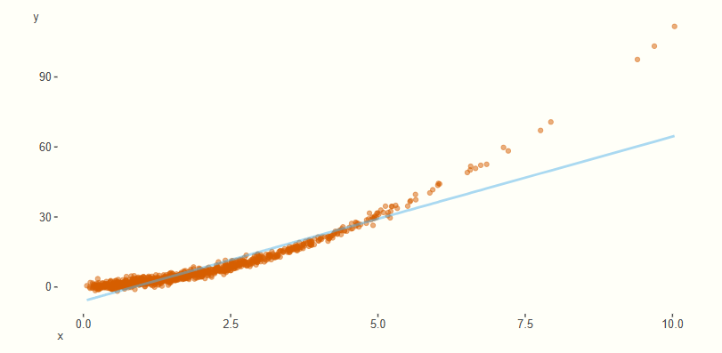

1. Introducción
Enfrentamos el problema de explicar una variable de respuesta \(Y\) en relación a un vector de variables explicativas \(\mathbf{X} = (X_1, \ldots, X_k)\).
Historicamente, han existido diferentes acercamientos a la modelación de esta relación.

Estos se abrevian como LM, GL, AM y GAM, respectivamente.
Ingredientes de un GAM
-
Componente aleatoria.
\( Y_i \mid \mathbf{X}_i = \mathbf{x}_i \sim EF(\theta_i) \) -
Componente sistemática.
Relacionamos la respuesta esperada \( \mu_i := \mathbb{E}[Y_i \mid \mathbf{X}_i = \mathbf{x}_i] \) con un predictor aditivo \( \eta_i \), determinado por funciones suaves \( \alpha, f_1, \ldots, f_k \):\[ \eta_i := \alpha + \sum_{j=1}^k f_j(x_{ij}) \] -
Función liga.
La relación ocurre mediante una función liga:\[ g(\mu_i) = \eta_i \]
Comparación con otras soluciones
vs. Transformaciones
Una transformación de un GLM del estilo
altera la estructura global de los datos, lo que causa problemas en relaciones no lineales más complejas.
En cambio, la variabilidad de una función suave permite adaptarse en cada localidad.

vs. modelo no aditivo
Una suposición no aditiva del estilo
se vuelve difícil de trabajar por la maldición de la dimensión, ya que la distancia entre puntos crece con \(k\), requiriendo mucha más información.
En cambio, la aditividad permite estudiar cada \( f_j \) por separado.
2. Construcción del modelo
Supongamos una muestra aleatoria de \( n \) observaciones del modelo:
Queremos estimar \( \alpha, f_1, \ldots, f_k \), o equivalentemente la función
de modo que se ajusten bien a estas observaciones.
Esto nos lleva a desarrollar:
- Metodología para construir la función \( f \) (equivalentemente, \( \alpha, f_1, \ldots, f_k \)).
- Metodología para comparar/validar modelos.
Estimación por máxima verosimilitud
Recordemos que en un GLM es estándar construir el modelo mediante la teoría de máxima verosimilitud (EMV). Es decir, estimamos \( \hat\beta_0, \hat\beta_1, \ldots, \hat\beta_k \) maximizando la verosimilitud.
Para los GAM seguiremos la misma idea.
Bajo la suposición
tenemos que
y por lo tanto una log-verosimilitud:
Recordemos el mapeo:
Asumiendo invertibilidad, obtenemos:
Así, a cada función \( f \) le asociamos un \( \theta \).
3. Ejemplo
Aquí van más ejemplos